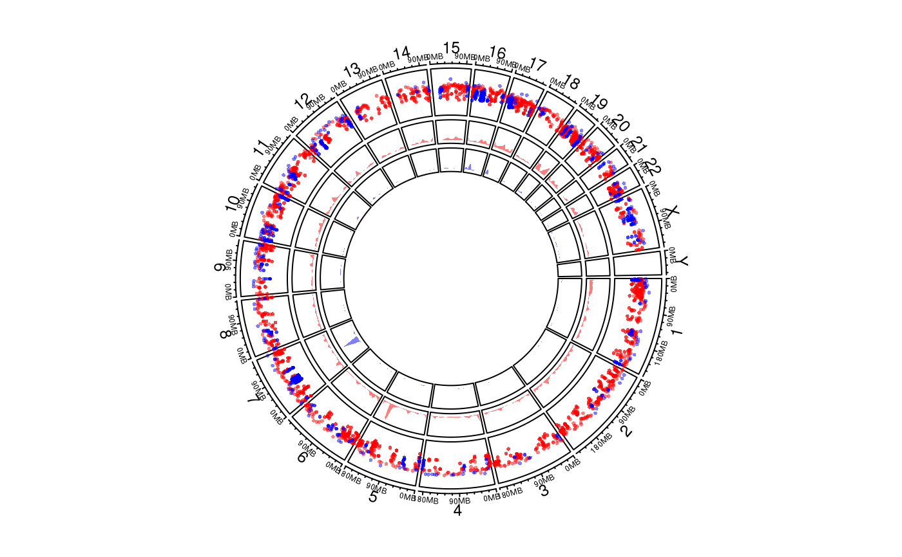

circos.genomicRainfall.RdGenomic rainfall plot
circos.genomicRainfall( data, mode = "min", ylim = NULL, col = "black", pch = par("pch"), cex = par("cex"), normalize_to_width = FALSE, ...)
| data | A bed-file-like data frame or a list of data frames. |
|---|---|
| mode | How to calculate the distance of two neighbouring regions, pass to |
| ylim | ylim for rainfall plot track. If |
| col | Color of points. It should be length of one. If |
| pch | Style of points. |
| cex | Size of points. |
| normalize_to_width | If it is |
| ... | Pass to |
This is high-level graphical function, which mean, it will create a new track.
Rainfall plot can be used to visualize distribution of regions. On the plot, y-axis corresponds to the distance to neighbour regions (log-based). So if there is a drop-down on the plot, it means there is a cluster of regions at that area.
On the plot, y-axis are log10-transformed.
# \donttest{ load(system.file(package = "circlize", "extdata", "DMR.RData")) # rainfall circos.initializeWithIdeogram(plotType = c("axis", "labels"))bed_list = list(DMR_hyper, DMR_hypo) circos.genomicRainfall(bed_list, pch = 16, cex = 0.4, col = c("#FF000080", "#0000FF80"))circos.clear() # }